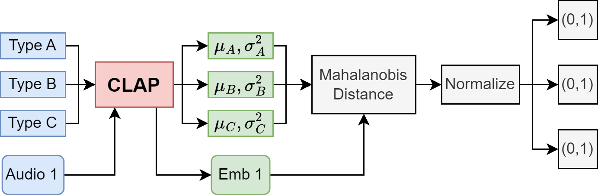

Imagine a dataset with three categories of sounds, each with distinct timbre characteristics. We could use pre-trained audio representation
models such as CLAP to extract the embeddings for each sound in our dataset. For any sound, we could also obtains for embedding and compare its
similarity relative to each class by measuring its distance to the center of each embedding cluster. We take the idea from anomaly detection,
where we measure the Mahalanobis distance between the reference audio embedding and the embedding clusters of each class by treating each
cluster as a Gaussian Distribution. The lower the distance, the more similar the sound is to that class. We could normalize the calculated
Mahalanobis Distance to range [0,1] and incorporate this similarity score as a conditioning information representing the timbre of the sound
into the trianing process.
Imagine a dataset with three categories of sounds, each with distinct timbre characteristics. We could use pre-trained audio representation models such as CLAP to extract the embeddings for each sound in our dataset. For any sound, we could also obtains for embedding and compare its similarity relative to each class by measuring its distance to the center of each embedding cluster. We take the idea from anomaly detection, where we measure the Mahalanobis distance between the reference audio embedding and the embedding clusters of each class by treating each cluster as a Gaussian Distribution. The lower the distance, the more similar the sound is to that class. We could normalize the calculated Mahalanobis Distance to range [0,1] and incorporate this similarity score as a conditioning information representing the timbre of the sound into the trianing process.

We could incorporate this similarity and condition it on a DDSP network. Loudness and spectral centroid envelopes are extracted from the
input audio and also passed as conditioning to the DDSP decoder. The decoder predicts corresponding parameters required for the transient
and noise synthesizers to synthesize the waveform.
We could incorporate this similarity and condition it on a DDSP network. Loudness and spectral centroid envelopes are extracted from the input audio and also passed as conditioning to the DDSP decoder. The decoder predicts corresponding parameters required for the transient and noise synthesizers to synthesize the waveform.
Regression analysis of the timbre control

BibTeX
BibTex Code Here